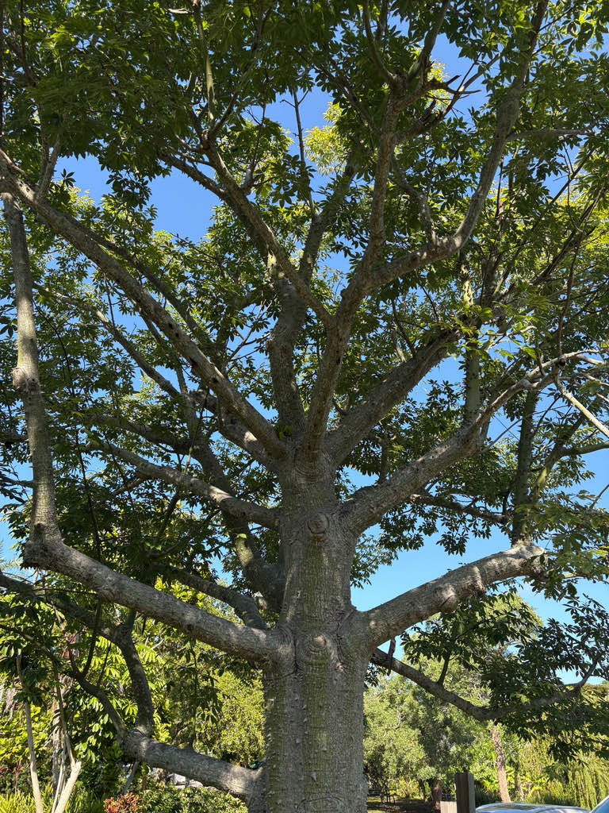

- The conical spines on the trunk are thought to be defenses left over from now-extinct South American megafauna — giant ground sloths and gomphotheres.
- The silky floss from its seed pods is buoyant and water-resistant; its close relative's floss (true kapok) filled Navy life jackets through both World Wars.
- The young green bark photosynthesizes even after the tree drops its leaves in fall. Ours is past that stage — too mature now, its bark long since turned gray — yet green still runs down the trunk's grooves. We're not certain why: our best guess is a film of algae settling into the damp channels where rainwater funnels down, but it's a question we're still looking into.
- One survey of a single tree in Mexico counted nearly 80 insect species, 8 bird species, and a nectar-feeding bat at its flowers.
Native to the subtropical and tropical forests of South America, primarily Brazil, Argentina, Paraguay, Uruguay, and Bolivia
- The Silk Floss Tree is essentially a Swiss Army knife of a tree. The silky floss bursting from its seed pods is buoyant and water-resistant — so similar to true kapok that it has been used as a substitute for stuffing pillows and upholstery. True kapok, from its close cousin Ceiba pentandra, was used by the U.S. Navy to fill life jackets through both World Wars.
- Its wood is light enough to make canoes, and seed oils serve both culinary and industrial purposes.
- In younger trees, the green-tinted bark is rich enough in chlorophyll to photosynthesize even after the leaves drop — an evolutionary trick to maximize energy capture during the leafless flowering season.
- As the bark matures to gray, an older tree loses that green photosynthesizing layer — and our specimen is well into that mature stage. Yet green still lingers in the grooves of its trunk, which has us curious. We suspect a film of algae taking hold in the damp channels rather than the tree's own chlorophyll, though it's an open question we're still looking into.
- Those fierce conical spines covering younger trunks are thought to be relics of defenses against now-extinct South American megafauna — giant ground sloths and elephant-like gomphotheres that vanished around ten thousand years ago.
- Its closest relatives include the Kapok tree and the African Baobab, both of which are also growing at this park — making Palma Sola home to three of the most extraordinary trunk architectures in the plant kingdom.
A Silk Floss Tree in bloom is essentially a pop-up wildlife buffet — its huge pink flowers pump out so much nectar that a single specimen can act as a keystone food source in an otherwise quiet landscape.
One study of a single suburban tree in Mexico documented 79 insect species, eight bird species, and a nectar-feeding bat visiting its flowers.
In Florida its fall flowering is especially valuable — appearing when many other nectar plants have finished, it feeds migrating hummingbirds and late-season bees.
Birds raid the burst seed pods for silky floss to line their nests, while the broad canopy provides shade and roosting structure year-round.
Primarily by seed, dispersed by wind carried on buoyant silky floss released when pods split open. The tree is deciduous, dropping its leaves in fall before producing its spectacular floral display.
Large, showy, hibiscus-like pink to pink-purple blooms with white and yellow bases spotted brown, 4–6 inches across, appearing October through December in Florida — the canopy can be completely covered when in full bloom.
Large football-shaped green capsules up to 8 inches long that split open at maturity to release dozens of black seeds embedded in white silky floss.
Small and black, carried on the wind by the buoyant silk floss surrounding them.
Bottle-shaped, studded with stout conical spines — dramatic on young trees, more worn and flattened on mature specimens. Green-barked when young due to chlorophyll in the bark; gray at maturity.
The spiny bottle-shaped trunk is unmistakable year-round. Watch for the dramatic fall flowering when the tree drops its leaves entirely — one of the most spectacular flowering events in the park calendar — followed by the bursting pods releasing clouds of white floss.
The main hazard here is physical: the large conical spines on the trunk. Use caution around the base of the tree.
The seed oil is edible and used in South America, but this isn't grown as a food plant and the silky floss isn't edible.
It has no known toxicity to people or pets.
In Bolivia the tree is called toborochi — "tree of refuge" or "sheltering tree" in Guaraní — and is the subject of one of that country's most beloved legends. A pregnant princess named Araverá, pursued by spirits of darkness, hid inside the swollen trunk of a toborochi tree to give birth to a son who would defeat them. The tree's bottle-shaped form is said to shelter her spirit still.
The toborochi is the symbol of Santa Cruz, Bolivia, and appears on the city's coat of arms.
NOMENCLATURE: Silk Floss was formerly Chorisia speciosa in the family Bombacaceae; it is now Ceiba speciosa in Malvaceae (subfamily Bombacoideae).


- © Sofia Linares (CC-BY-NC), via iNaturalist
- © Randall Carter (CC-BY-NC), via iNaturalist